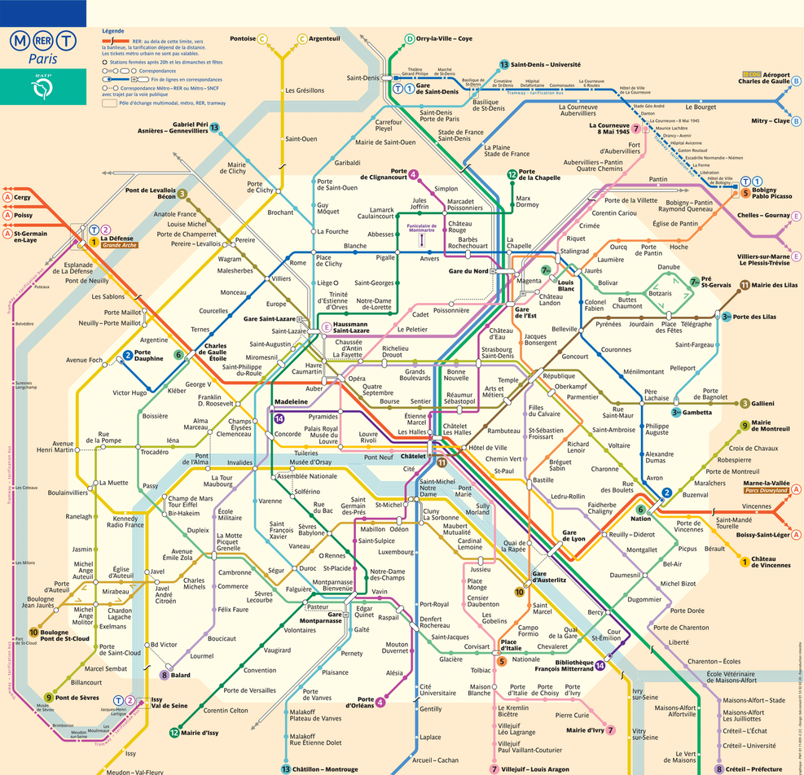

<div id="content">

    <div id="search-card">

        

        <p id="error-message" *ngIf="displayError">{{errorMessage}}</p>

        <div id="chemin-request" *ngIf="displaySearch">

            <div class="inputs">
                <label>Départ : </label>
                <input placeholder="Station de départ..." class="station-input" type="text" name="source" [(ngModel)]="source"(focus)="onFocusSource()" value="{{source}}">
            </div>
        
        
            <ul *ngIf="source !='' && displaySourceSearch" class="station-list" scrollable="true">
                <ng-container *ngFor="let station of stations">
                    <li class="station-list-element" *ngIf="station.nom.toLowerCase().includes(source.toLowerCase())" (click)="addSource(station.nom)">
                        <span style="margin-right: 10px;">{{station.nom}}</span>
                        <div class="metro-icons">
                            
                        </div>
                    </li>
                </ng-container>
            </ul>
        
            <br>
        
            <div class="inputs">
                <label>Destination : </label>
                <input placeholder="Station d'arrivée..." class="station-input" type="text" [(ngModel)]="destination" (focus)="onFocusDest()" value="{{destination}}" >
            </div>
        
        
            <ul *ngIf="destination !='' && displayDestinationSearch" class="station-list" scrollable="true">
                <ng-container *ngFor="let station of stations">
                    <li class="station-list-element"  *ngIf="station.nom.toLowerCase().includes(destination.toLowerCase())" (click)="addDestination(station.nom)">
                        <span style="margin-right: 10px;">{{station.nom}}</span>
                        <div class="metro-icons">
                            
                        </div>
                    </li>
                </ng-container>
            </ul>
        
            <button id="button-chemin" (click)="getChemin()">Allons-y !</button>

        </div>

        <div *ngIf="displayChemin" id="chemin-show">
            <button id="button-retour" (click)="displayChemin =false; displaySearch=true;">Retour</button>
            <span class="time">Heure de départ : {{startTime.toLocaleTimeString('fr-FR').slice(0, -3)}}</span>
            <path [points]="listePointsChemin"></path>
            <span class="time">Heure d'arrivée : {{arrivalTime.toLocaleTimeString('fr-FR').slice(0, -3)}}</span>
            <span id="chemin-text">{{chemin}}</span>
        </div>


    
    </div>

    

</div>
